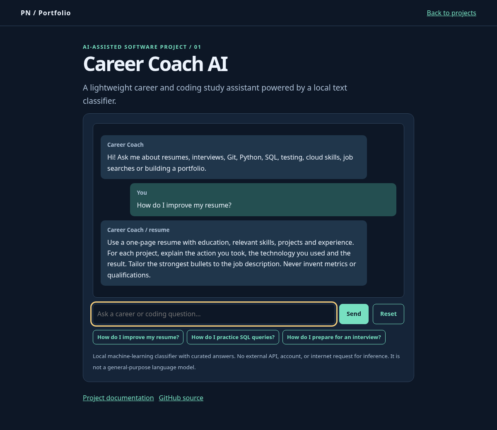
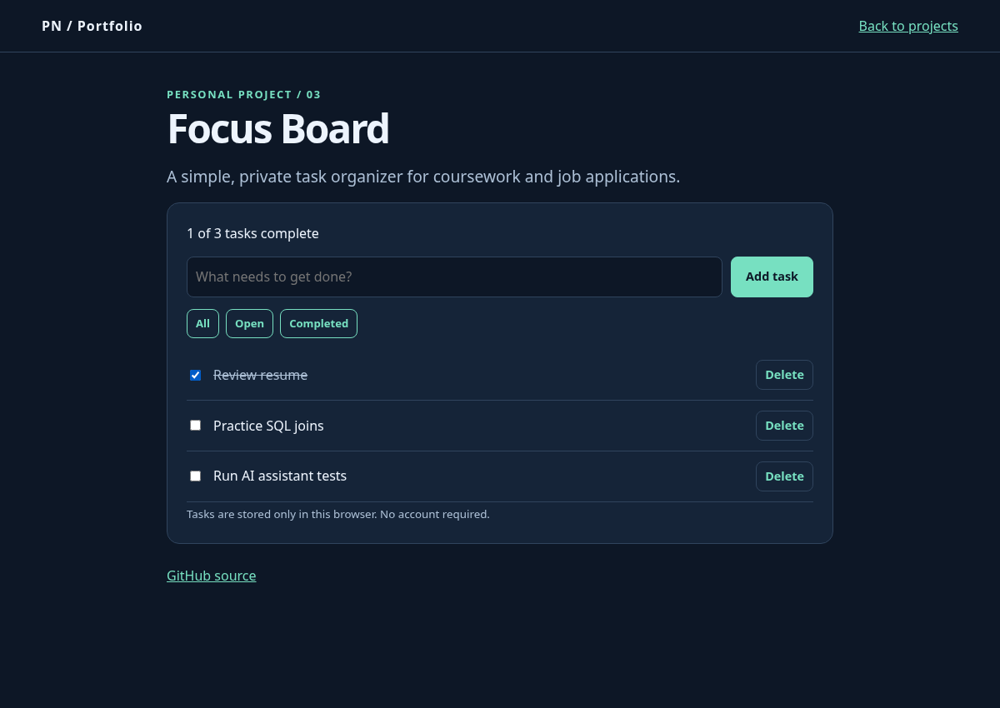

Computer Science • Lamar University
Patrick
Nanlohy.
Aspiring software developer with interests in systems programming, interactive applications and practical AI-assisted development.
Beaumont, Texas • Expected graduation: December 2026
01 / About
Learning by building
I am a Computer Science senior at Lamar University in Beaumont, Texas, and I expect to complete my Bachelor of Science degree in December 2026. My coursework has introduced me to software engineering, algorithms, databases, computer networks and distributed systems. I enjoy seeing how the concepts I learn in class can be applied to practical software, especially when I can break a larger problem into smaller pieces and test each part.
My technical interests include software development, systems programming, game development and web applications. I have worked with JavaScript, C/C++, Lua and Python, and I have used Git and Linux while learning to organize, debug and document code. Personal game projects such as Snake Arcade and Mount Sahara have given me opportunities to explore user interactions, event-driven logic and the process of improving a program after finding an issue. I also value the experience of working with classmates, where clear requirements and communication are just as important as writing the code itself.
Outside of school, my food-service experience has helped me understand how to communicate with different people, stay organized during busy periods and solve problems without losing sight of the team’s priorities. These habits are useful in technology as well, especially when a project involves deadlines, feedback and shared responsibilities.
After graduation, my goal is to pursue an entry-level software development or systems engineering position where I can continue building my technical foundation while contributing to real projects. I want to strengthen my experience with automated testing, databases, application deployment and cloud technologies. This portfolio brings together my academic work, independent projects and career preparation. I hope it demonstrates not only the tools I have learned, but also my willingness to keep learning, communicate clearly and approach technical problems with patience and curiosity.
02 / Selected work
Projects

Course project
Community Garden Management
Spring 2026 team project with garden plot tracking, role-based workflows, scheduling, announcements and simulated payments. Documentation lead.

Additional independent projects
Snake Arcade — browser game built with JavaScript and Phaser 3. Repository · Demo
Mount Sahara — Roblox development and Lua scripting. Development log
03 / Capabilities
Technical skills
Programming
JavaScript, C/C++, Lua, Python and Java (coursework), HTML/CSSSystems
Linux, Git/GitHub; Docker and networking courseworkDatabases
SQL and relational database concepts (coursework)Cloud
GitHub Pages deployment; AWS/Azure fundamentals are learning goalsAI tools
ChatGPT-assisted development, prompt documentation, local text classificationEngineering practices
Debugging, testing, requirements analysis, technical writing and collaboration04 / Resume
Professional resume
Education, technical skills, relevant projects, experience and activities.
05 / Contact
Let’s connect
I am interested in early-career software and systems engineering opportunities.